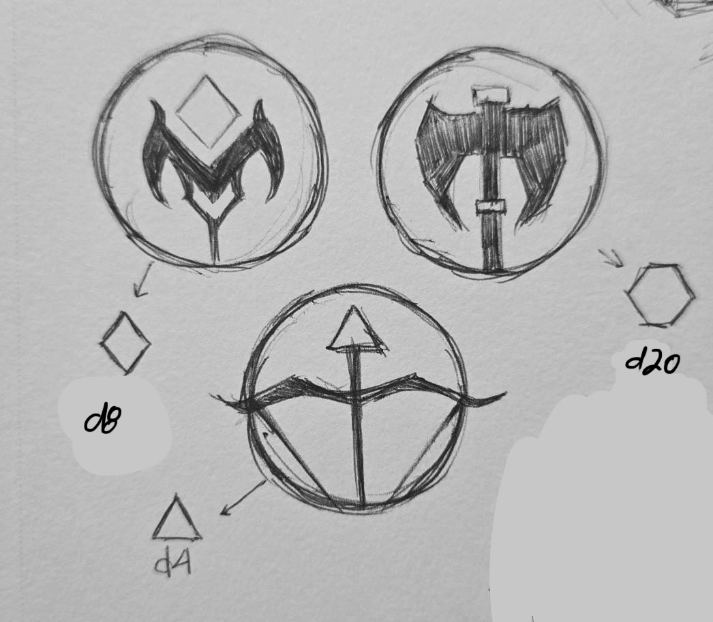

A turn-based PvP game which I'm developing in Godot, based on a D&D campaign that I'm playing with some close friends.
This is my first PvP game, and it's also my first Godot project. Not only that, but across all the different genres
that I explored, I've never developed a turn-based game. First time experiences all around in this project, and that's exactly
why I'm so passionate about it. Working on this game has been one of the most valuable learning experiences as a dev, both technically
and creatively. In this devlog, I share the challenges, achievements and thought processes that sprouted from this game.
Entry #2
Update: Completed Aspen's Core Moveset!
Jan 31, 2025
The core moveset of the first character, Aspen, is done! I've been working on this character for a while now, and I'm
happy with how their kit's turning out so far. My goal is to release a very early build of the game with 3 (one for each
archetype) characters so I can get some people testing the game feel and balance. Before I started working on Aspen, I
created an outline for which characters I would develop first:
Aspen
Raouss
Mival
Akamien
Poko
Sothro
Aspen's kit is done, so, if I stick to this outline, Raouss will be the next in development. But in any case, I made
a showcase video for my friends, and will share it here as well cause why not. All of the assets you'll see in the footage
below are placeholders, but polish aside the first Aspen's basic moveset is done!
Who's Aspen?
Aspen is one of the player character who joined the campaign after the other players. D&D lets players pick
one or even multiple classes that have their own skills, specialties and identities. While most of us committed to a
single class, Aspen is unique among our party members in that they are both a Fighter and a Wizard. This means that
they can do a little bit of everything really, from kicking ass in close-quarter brawls, to sniping unsuspecting
foes from afar and casting spells. That versatility was, to me, one of the most defining traits of the character,
and that became the driving inspiration for their range of different projectiles. A really cool thing that I found
out about Aspen in the campaign is that they have this ability called "Bladesong", which makes them extra speedy
and really hard to pin down. I knew I just had to reference that in the game somehow, and that's when I had the
idea of shifting the game's flow to Aspen's POV. Instead of asking what Aspen would look like under the effects of
this "Bladesong", I started asking how would everything else look to them. The answer: everything would probably look
hella slow.
I haven't thought of a moveset for all characters, but I do have some ideas for their base stats, namely Health and Agility.
Below you can take a look at how I'm planning the base of all characters.
Character Base Stats
Character
Archetype
Health
Agility
Akamien
Skirmisher
100
50
Aspen
Skirmisher
100
50
Mival
Arcanist
90
25
Poko
Arcanist
90
25
Raouss
Brawler
130
10
Sothro
Brawler
110
25
Entry #1
Prologue
Jan 30, 2025
The campaign this game is based on is 3 years old now, and I started working on this project during winter break of 2024.
I'd been wanting to create a game about our campaign for a while, but now that I also wanted to learn Godot, I saw a
great opportunity to finally turn that idea into reality. I talked to the friends I play with, who are all talented artists,
to see if they would be on board to helping me create assets for the game, and they were all super excited about it.
There are 6 player characters in the campaign, all of which I want to make into playable characters in this game. Our
gamemaster (who's contributing to the project with some wonderful concept art) suggested that I divide the characters into
3 classes, for which I drafted character archetypes:
Brawler
Emphasizes high damage with melee attacks that don't fluctuate, always dealing critical hits if
charged for long enough. The Brawler rewards players who can read their opponents like a book.
Skirmisher
Focuses on versatility and mobility. The Skirmisher has a range of offensive
and defensive tools that let strategic players adapt to any foe.
Arcanist
Magic wielders that typically start off weak, but snowball into living nightmares.
The Arcanist trades consistency for trickery and deception, perfect for those with an affinity for chaos.

Top left: Arcanist icon, top right: Brawler icon, bottom: Skirmisher icon.
Made by our gamemaster, who's also a talented artist. Check him out on instagram!
I think the coolest thing about TTRPGs is that they inspire so much creativity. Whenever I work on anything
related to the characters we created, be it a short animation or drawing, I just get this surge of motivation and creativity.
It's really hard for me to put a project down when it involves our D&D campaign in some way, and I feel like that's just the
nature of how TTRPGs are designed. They are designed to make players get invested in a game, typically through story
immersion, not just game mechanics. I think, in a way at least, all games aim to immerse players in their worlds, it's
just that the way in which players are allowed to interact with the world in a TTRPG and in a video game differs a lot.